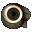
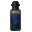
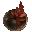
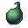
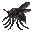

Ингредиенты последовательности 9
46 ингредиентов. Шанс — за одну попытку, убийство, блок или сундук. «Главный» — ингредиент в центральном слоте котла.
Базилик
 Базилик. Нужен в зельях: Красный Жрец 1, Красный Жрец 6, Бездна 9, Красный Жрец 9.
Базилик. Нужен в зельях: Красный Жрец 1, Красный Жрец 6, Бездна 9, Красный Жрец 9.
- Сундук. Хранилище Испытательных залов, Зловещее хранилище Испытательных залов — 20 %.
- Житель мода. Торговец Потусторонних (если выпадет среди его товаров) — 1–8 алмазов.
Вода древнего колодца
 Вода древнего колодца. Нужен в зельях: Дверь 9, Смерть 6, Дверь 8.
Вода древнего колодца. Нужен в зельях: Дверь 9, Смерть 6, Дверь 8.
- Пустая бутылка. Источник воды (в деревне) — 100 % за попытку, бутылка остывает 0,5 с.
- Житель мода. Торговец Потусторонних (если выпадет среди его товаров) — 1–8 алмазов.
- Сундук. Постройки Мира духов — 35 %.
Вытяжка из вымоченной тополиной коры
 Вытяжка из вымоченной тополиной коры. Нужен в зельях: Смерть 9.
Вытяжка из вымоченной тополиной коры. Нужен в зельях: Смерть 9.
- Бутылка воды. Берёзовое бревно — 100 % за попытку, бутылка остывает 0,5 с.
- Житель мода. Торговец Потусторонних (если выпадет среди его товаров) — 1–8 алмазов.
Гидролат козлобородника
 Гидролат козлобородника. Нужен в зельях: Дверь 9, Смерть 6, Дверь 8.
Гидролат козлобородника. Нужен в зельях: Дверь 9, Смерть 6, Дверь 8.
- Пустая бутылка. Коза (биом «горы») — 50 % за попытку, бутылка остывает 10 с.
- Житель мода. Торговец Потусторонних (если выпадет среди его товаров) — 1–8 алмазов.
- Сундук. Постройки Мира духов — 38 %.
Глаз зрелой рыбы Манхал

- Житель мода. Торговец Потусторонних (если выпадет среди его товаров) — 1–8 алмазов.
- Существо мода. Мурлок (водится: океаны) — 26 % за убийство.
Гнездо демонического червя Сискун
 Гнездо демонического червя Сискун. Нужен в зельях: Дверь 4, Тьма 9.
Гнездо демонического червя Сискун. Нужен в зельях: Дверь 4, Тьма 9.
- Блок. Грязь, Корнистая земля (лопатой; в биоме: Болото, Мангровое болото; только природный блок) — 8 % за блок.
- Житель мода. Торговец Потусторонних (если выпадет среди его товаров) — 1–8 алмазов.
- Житель мода. Священник Вечной Ночи (если выпадет среди его товаров) — 1–8 алмазов.
- Существо мода. Злоуст (водится: Мир духов; приходит и Ночью Мира духов) — 6,7 % за убийство.
Грецкий орех с глубоким узором
 Грецкий орех с глубоким узором. Нужен в зельях: Смерть 9.
Грецкий орех с глубоким узором. Нужен в зельях: Смерть 9.
- Житель мода. Торговец Потусторонних (если выпадет среди его товаров) — 1–8 алмазов.
- Существо мода. Пузырь (водится: Мир духов; приходит и Ночью Мира духов) — 38 % за убийство.
Дистиллированный спирт
 Дистиллированный спирт. Нужен в зельях: Бездна 9, Тиран 8, Красный Жрец 4, Красный Жрец 8.
Дистиллированный спирт. Нужен в зельях: Бездна 9, Тиран 8, Красный Жрец 4, Красный Жрец 8.
- Крафт. Печь.
- Житель мода. Торговец Потусторонних (если выпадет среди его товаров) — 1–8 алмазов.
Душистая шершнёвая трава
 Душистая шершнёвая трава. Нужен в зельях: Смерть 9.
Душистая шершнёвая трава. Нужен в зельях: Смерть 9.
- Крафт. Верстак.
- Житель мода. Торговец Потусторонних (если выпадет среди его товаров) — 1–8 алмазов.
- Существо мода. Мрачный Жнец (водится: Мир духов, Подземный мир; приходит и Ночью Мира духов) — 27 % за убийство.
Золото
 Золото. Нужен в зельях: Судья 9, Судья 3, Судья 5, Ошибка 3, Колесо Фортуны 4.
Золото. Нужен в зельях: Судья 9, Судья 3, Судья 5, Ошибка 3, Колесо Фортуны 4.
- Крафт. Камнерез.
- Житель мода. Торговец Потусторонних (если выпадет среди его товаров) — 1–8 алмазов.
- Сундук. Постройки Мира духов — 35 %.
- Существо мода. Полупрозрачный чародей (водится: Мир духов; приходит и Ночью Мира духов) — 4,5 % за убийство.
Иллюзорный кристалл
 Иллюзорный кристалл. Нужен в зельях: Дверь 9 — главный.
Иллюзорный кристалл. Нужен в зельях: Дверь 9 — главный.
- Крафт. Верстак.
- Житель мода. Торговец Потусторонних (если выпадет среди его товаров) — 1–8 алмазов.
- Сундук. Постройки Мира духов — 55 %.
- Существо мода. Полупрозрачный чародей (водится: Мир духов; приходит и Ночью Мира духов) — 31 % за убийство.
Красное вино
 Красное вино. Нужен в зельях: Судья 9, Солнце 9, Красный Жрец 1, Красный Жрец 6, Смерть 8, Красный Жрец 9, Красный Жрец 7, Красный Жрец 2.
Красное вино. Нужен в зельях: Судья 9, Солнце 9, Красный Жрец 1, Красный Жрец 6, Смерть 8, Красный Жрец 9, Красный Жрец 7, Красный Жрец 2.
- Сундук. Клад — 40 %.
- Житель. Фермер (уровень «мастер») — 24 изумруда, до 2 сделок.
- Житель мода. Торговец Потусторонних (если выпадет среди его товаров) — 1–8 алмазов.
- Житель мода. Священник Вечного Палящего Солнца (если выпадет среди его товаров) — 1–8 алмазов.
Крепкий спирт
 Крепкий спирт. Нужен в зельях: Дверь 7, Тиран 4, Смерть 3, Тиран 9, Тиран 7.
Крепкий спирт. Нужен в зельях: Дверь 7, Тиран 4, Смерть 3, Тиран 9, Тиран 7.
- Крафт. Верстак.
- Житель мода. Торговец Потусторонних (если выпадет среди его товаров) — 1–8 алмазов.
Кристалл Обмотанного тканью
 Кристалл Обмотанного тканью. Нужен в зельях: Смерть 9 — главный.
Кристалл Обмотанного тканью. Нужен в зельях: Смерть 9 — главный.
- Добыча. Визер-скелет — 2,5 % за убийство игроком.
- Житель мода. Торговец Потусторонних (если выпадет среди его товаров) — 1–8 алмазов.
- Сундук. Постройки Мира духов — 41 %.
- Существо мода. Мрачный Жнец (водится: Мир духов, Подземный мир; приходит и Ночью Мира духов) — 27 % за убийство.
Кровь Бестеневого демонического волка
 Кровь Бестеневого демонического волка. Нужен в зельях: Тиран 4, Тьма 9, Дверь 5.
Кровь Бестеневого демонического волка. Нужен в зельях: Тиран 4, Тьма 9, Дверь 5.
- Добыча. Волк (ночью; во второй руке пустая бутылка, она тратится) — 35 % за убийство игроком.
- Житель мода. Торговец Потусторонних (если выпадет среди его товаров) — 1–8 алмазов.
- Житель мода. Священник Вечной Ночи (если выпадет среди его товаров) — 1–8 алмазов.
- Существо мода. Мрачный Жнец (водится: Мир духов, Подземный мир; приходит и Ночью Мира духов) — 6,5 % за убийство.
Кровь глубоководного марлина

- Житель мода. Торговец Потусторонних (если выпадет среди его товаров) — 1–8 алмазов.
- Существо мода. Мурлок (водится: океаны) — 9,2 % за убийство.
Кровь кальмара Лавос
 Кровь кальмара Лавос. Нужен в зельях: Шут 9 — главный.
Кровь кальмара Лавос. Нужен в зельях: Шут 9 — главный.
- Житель мода. Торговец Потусторонних (если выпадет среди его товаров) — 1–8 алмазов.
- Существо мода. Мурлок (водится: океаны) — 26 % за убийство.
Листья золотой мяты
 Листья золотой мяты. Нужен в зельях: Шут 9, Колесо Фортуны 1.
Листья золотой мяты. Нужен в зельях: Шут 9, Колесо Фортуны 1.
- Сундук. Бастион (сокровищница) — 50 %.
- Сундук. Бастион, Бастион (мост), Бастион (стойло хоглинов) — 20 %.
- Житель мода. Торговец Потусторонних (если выпадет среди его товаров) — 1–8 алмазов.
- Сундук. Постройки Мира духов — 35 %.
Настой ночной ванили
 Настой ночной ванили. Нужен в зельях: Шут 9, Колесо Фортуны 1.
Настой ночной ванили. Нужен в зельях: Шут 9, Колесо Фортуны 1.
- Добыча. Фантом (убить игроком) — 8 % за убийство.
- Житель мода. Торговец Потусторонних (если выпадет среди его товаров) — 1–8 алмазов.
Обрезки ногтей разных людей
 Обрезки ногтей разных людей. Нужен в зельях: Ошибка 9, Тьма 4.
Обрезки ногтей разных людей. Нужен в зельях: Ошибка 9, Тьма 4.
- Крафт. Верстак.
- Житель мода. Торговец Потусторонних (если выпадет среди его товаров) — 1–8 алмазов.
- Житель мода. Священник Вечной Ночи (если выпадет среди его товаров) — 1–8 алмазов.
- Существо мода. Гнойная рука (водится: Мир духов) — 9,4 % за убийство.
Остаточный порошок Призрака в плаще
 Остаточный порошок Призрака в плаще. Нужен в зельях: Колесо Фортуны 9, Ошибка 6.
Остаточный порошок Призрака в плаще. Нужен в зельях: Колесо Фортуны 9, Ошибка 6.
- Крафт. Верстак.
- Житель мода. Торговец Потусторонних (если выпадет среди его товаров) — 1–8 алмазов.
- Существо мода. Призрак (водится: Мир духов, Подземный мир; приходит и Ночью Мира духов) — 15 % за убийство.
Очищенная вода
 Очищенная вода. Нужен в зельях: Демонесса 9, Шут 8, Демонесса 5, Демонесса 4, Демонесса 6, Демонесса 8, Шут 7, Мать 9, Шут 9, Зритель 9, Демонесса 7.
Очищенная вода. Нужен в зельях: Демонесса 9, Шут 8, Демонесса 5, Демонесса 4, Демонесса 6, Демонесса 8, Шут 7, Мать 9, Шут 9, Зритель 9, Демонесса 7.
- Крафт. Печь.
- Житель мода. Торговец Потусторонних (если выпадет среди его товаров) — 1–8 алмазов.
- Сундук. Постройки Мира духов — 39 %.
Пепел Врат Анх
 Пепел Врат Анх. Нужен в зельях: Дверь 4, Тьма 9.
Пепел Врат Анх. Нужен в зельях: Дверь 4, Тьма 9.
- Крафт. Костёр.
- Житель мода. Торговец Потусторонних (если выпадет среди его товаров) — 1–8 алмазов.
- Житель мода. Священник Вечной Ночи (если выпадет среди его товаров) — 1–8 алмазов.
- Сундук. Постройки Мира духов — 35 %.
- Существо мода. Призрак (водится: Мир духов, Подземный мир; приходит и Ночью Мира духов) — 7,3 % за убийство.
Порошок вербены
 Порошок вербены. Нужен в зельях: Ошибка 9, Тьма 4.
Порошок вербены. Нужен в зельях: Ошибка 9, Тьма 4.
- Блок. Розовый тюльпан, Пион (ножницами) — 25 % за блок.
- Житель мода. Торговец Потусторонних (если выпадет среди его товаров) — 1–8 алмазов.
- Житель мода. Священник Вечной Ночи (если выпадет среди его товаров) — 1–8 алмазов.
- Сундук. Постройки Мира духов — 54 %.
Порошок драконьей кровавой травы

- Блок. Мак, Красный тюльпан — 20 % за блок.
- Житель мода. Торговец Потусторонних (если выпадет среди его товаров) — 1–8 алмазов.
Порошок краснокоронного бальзамина
Порошок краснокоронного бальзамина. Нужен в зельях: Красный Жрец 9 — главный, Красный Жрец 4, Красный Жрец 8 — главный.
- Блок. Мёртвый куст (в биоме: пустошь) — 8 % за блок.
- Житель мода. Торговец Потусторонних (если выпадет среди его товаров) — 1–8 алмазов.
Порошок тополиных листьев
 Порошок тополиных листьев. Нужен в зельях: Бездна 9, Красный Жрец 9.
Порошок тополиных листьев. Нужен в зельях: Бездна 9, Красный Жрец 9.
- Житель мода. Торговец Потусторонних (если выпадет среди его товаров) — 1–8 алмазов.
- Существо мода. Пузырь (водится: Мир духов; приходит и Ночью Мира духов) — 38 % за убийство.
Почва, осквернённая Миром духов
 Почва, осквернённая Миром духов. Нужен в зельях: Дверь 9, Смерть 5.
Почва, осквернённая Миром духов. Нужен в зельях: Дверь 9, Смерть 5.
- Блок. Почва душ (лопатой; только природный блок) — 0,2 % за блок.
- Блок. Земля (в Мире духов или в Клочке Мира духов (верхний мир)) — 40 % за блок.
- Житель мода. Торговец Потусторонних (если выпадет среди его товаров) — 1–8 алмазов.
- Сундук. Постройки Мира духов — 35 %.
- Существо мода. Мрачный Жнец (водится: Мир духов, Подземный мир; приходит и Ночью Мира духов) — 9,6 % за убийство.
Пузырь мурлока

- Житель мода. Торговец Потусторонних (если выпадет среди его товаров) — 1–8 алмазов.
- Сундук. Постройки Мира духов — 41 %.
- Существо мода. Мурлок (водится: океаны) — 26 % за убийство.
Сапфир
 Сапфир. Нужен в зельях: Ошибка 9, Тьма 4.
Сапфир. Нужен в зельях: Ошибка 9, Тьма 4.
- Крафт. Верстак.
- Житель мода. Торговец Потусторонних (если выпадет среди его товаров) — 1–8 алмазов.
- Житель мода. Священник Вечной Ночи (если выпадет среди его товаров) — 1–8 алмазов.
- Существо мода. Синий чародей (водится: Мир духов; приходит и Ночью Мира духов) — 5,3 % за убийство.
Серебряный четырёхлистный клевер
 Серебряный четырёхлистный клевер. Нужен в зельях: Колесо Фортуны 9 — главный.
Серебряный четырёхлистный клевер. Нужен в зельях: Колесо Фортуны 9 — главный.
- Житель мода. Торговец Потусторонних (если выпадет среди его товаров) — 1–8 алмазов.
- Сундук. Постройки Мира духов — 38 %.
- Существо мода. Кролик знаний (водится: Мир духов) — 49 % за убийство.
Сок дурмана
 Сок дурмана. Нужен в зельях: Демонесса 9, Шут 8, Демонесса 8, Мать 9, Демонесса 7.
Сок дурмана. Нужен в зельях: Демонесса 9, Шут 8, Демонесса 8, Мать 9, Демонесса 7.
- Пустая бутылка. Сирень — 50 % за попытку, бутылка остывает 1 с.
- Житель мода. Торговец Потусторонних (если выпадет среди его товаров) — 1–8 алмазов.
Сок нарцисса
 Сок нарцисса. Нужен в зельях: Демонесса 9, Демонесса 1, Демонесса 2, Демонесса 4, Демонесса 3, Демонесса 8, Смерть 7, Демонесса 7.
Сок нарцисса. Нужен в зельях: Демонесса 9, Демонесса 1, Демонесса 2, Демонесса 4, Демонесса 3, Демонесса 8, Смерть 7, Демонесса 7.
- Пустая бутылка. Оранжевый тюльпан — 50 % за попытку, бутылка остывает 1 с.
- Житель мода. Торговец Потусторонних (если выпадет среди его товаров) — 1–8 алмазов.
- Существо мода. Безголовая невеста (водится: Мир духов) — 0,49 % за убийство.
Сок чёрного дурмана
 Сок чёрного дурмана. Нужен в зельях: Демонесса 9, Демонесса 5, Демонесса 6, Шут 6, Мать 7, Демонесса 8, Демонесса 7.
Сок чёрного дурмана. Нужен в зельях: Демонесса 9, Демонесса 5, Демонесса 6, Шут 6, Мать 7, Демонесса 8, Демонесса 7.
- Пустая бутылка. Визерская роза — 60 % за попытку, бутылка остывает 1 с.
- Житель мода. Торговец Потусторонних (если выпадет среди его товаров) — 1–8 алмазов.
- Сундук. Постройки Мира духов — 41 %.
Трава середины лета
 Трава середины лета. Нужен в зельях: Солнце 9, Бездна 7.
Трава середины лета. Нужен в зельях: Солнце 9, Бездна 7.
- Блок. Низкая трава (днём; в биоме: Равнины, Подсолнуховые поля, Цветочный лес, Луг) — 5 % за блок.
- Житель мода. Торговец Потусторонних (если выпадет среди его товаров) — 1–8 алмазов.
- Житель мода. Священник Вечного Палящего Солнца (если выпадет среди его товаров) — 1–8 алмазов.
Хрустальный подсолнух
 Хрустальный подсолнух. Нужен в зельях: Солнце 9 — главный.
Хрустальный подсолнух. Нужен в зельях: Солнце 9 — главный.
- Крафт. Верстак.
- Житель мода. Торговец Потусторонних (если выпадет среди его товаров) — 1–8 алмазов.
- Житель мода. Священник Вечного Палящего Солнца (если выпадет среди его товаров) — 1–8 алмазов.
- Сундук. Постройки Мира духов — 38 %.
- Существо мода. Полупрозрачный чародей (водится: Мир духов; приходит и Ночью Мира духов) — 31 % за убийство.
Цветок красного каштана
Цветок красного каштана. Нужен в зельях: Красный Жрец 9.
- Житель мода. Торговец Потусторонних (если выпадет среди его товаров) — 1–8 алмазов.
- Существо мода. Пузырь (водится: Мир духов; приходит и Ночью Мира духов) — 38 % за убийство.
Цветок полуночной красавицы
 Цветок полуночной красавицы. Нужен в зельях: Тьма 9 — главный.
Цветок полуночной красавицы. Нужен в зельях: Тьма 9 — главный.
- Блок. Скалковый катализатор (только природный блок) — 35 % за блок.
- Житель мода. Торговец Потусторонних (если выпадет среди его товаров) — 1–8 алмазов.
- Житель мода. Священник Вечной Ночи (если выпадет среди его товаров) — 1–8 алмазов.
- Сундук. Постройки Мира духов — 30 %.
- Существо мода. Безголовая невеста (водится: Мир духов) — 21 % за убийство.
Цветок, выросший из трупа
 Цветок, выросший из трупа. Нужен в зельях: Дверь 9, Смерть 5.
Цветок, выросший из трупа. Нужен в зельях: Дверь 9, Смерть 5.
- Крафт. Верстак.
- Житель мода. Торговец Потусторонних (если выпадет среди его товаров) — 1–8 алмазов.
- Существо мода. Мрачный Жнец (водится: Мир духов, Подземный мир; приходит и Ночью Мира духов) — 9,6 % за убийство.
Цитрин
 Цитрин. Нужен в зельях: Колесо Фортуны 9, Ошибка 6.
Цитрин. Нужен в зельях: Колесо Фортуны 9, Ошибка 6.
- Крафт. Верстак.
- Житель мода. Торговец Потусторонних (если выпадет среди его товаров) — 1–8 алмазов.
- Сундук. Постройки Мира духов — 36 %.
- Существо мода. Каменный голем (водится: весь верхний мир) — 6,7 % за убийство.
Чёрное перо чудовищной птицы
 Чёрное перо чудовищной птицы. Нужен в зельях: Демонесса 9 — главный.
Чёрное перо чудовищной птицы. Нужен в зельях: Демонесса 9 — главный.
- Добыча. Фантом — 5 % за убийство игроком.
- Житель мода. Торговец Потусторонних (если выпадет среди его товаров) — 1–8 алмазов.
- Существо мода. Безголовая невеста (водится: Мир духов) — 21 % за убийство.
Чёрный комар в кровавых крапинах

- Житель мода. Торговец Потусторонних (если выпадет среди его товаров) — 1–8 алмазов.
- Существо мода. Пузырь (водится: Мир духов; приходит и Ночью Мира духов) — 38 % за убийство.
Чужая кровь
 Чужая кровь. Нужен в зельях: Ошибка 9, Тьма 5, Ошибка 8.
Чужая кровь. Нужен в зельях: Ошибка 9, Тьма 5, Ошибка 8.
- Добыча. Эндермен (убить игроком) — 15 % за убийство.
- Житель мода. Торговец Потусторонних (если выпадет среди его товаров) — 1–8 алмазов.
- Житель мода. Священник Вечной Ночи (если выпадет среди его товаров) — 1–8 алмазов.
Эссенция безвременника
 Эссенция безвременника. Нужен в зельях: Бездна 1, Зритель 9.
Эссенция безвременника. Нужен в зельях: Бездна 1, Зритель 9.
- Добыча. Хранитель — 100 % за убийство.
- Сундук. Древний город — 25 %.
- Житель мода. Торговец Потусторонних (если выпадет среди его товаров) — 1–8 алмазов.
Эфирное масло лиственницы
 Эфирное масло лиственницы. Нужен в зельях: Колесо Фортуны 9, Ошибка 6.
Эфирное масло лиственницы. Нужен в зельях: Колесо Фортуны 9, Ошибка 6.
- Пустая бутылка. Еловое бревно (биом «тайга») — 60 % за попытку, бутылка остывает 1 с.
- Житель мода. Торговец Потусторонних (если выпадет среди его товаров) — 1–8 алмазов.
Ядовитый болиголов
 Ядовитый болиголов. Нужен в зельях: Шут 9, Колесо Фортуны 1.
Ядовитый болиголов. Нужен в зельях: Шут 9, Колесо Фортуны 1.
- Добыча. Ведьма (убить игроком) — 8 % за убийство.
- Житель мода. Торговец Потусторонних (если выпадет среди его товаров) — 1–8 алмазов.
- Сундук. Постройки Мира духов — 30 %.